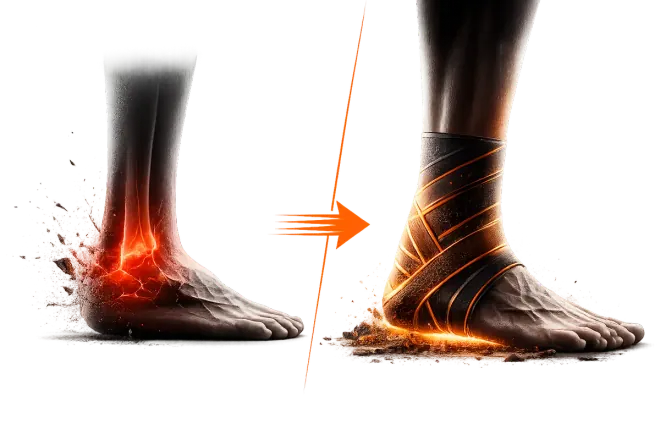
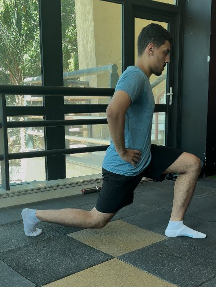
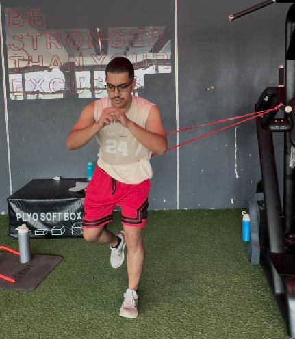
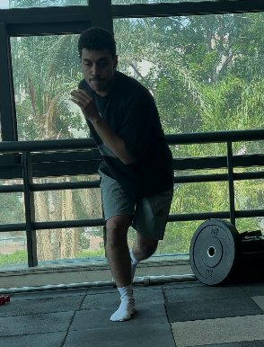
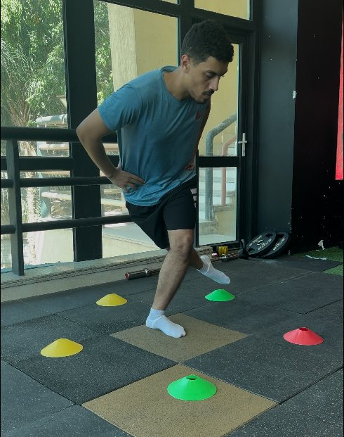

تأهيل رياضي. تقدّم تقدر تقيسه.
ارجع لرياضتك
بخطة واضحة لكاحلك.
برنامج متدرّج للرياضيين اللي عندهم التواءات متكررة أو عدم ثبات في الكاحل، بعد التقييم الطبي. تعرف تبدأ منين، تتدرّب إزاي، وإمتى تكون جاهز للخطوة اللي بعدها.
- خطة من 10 أسابيع
- 4 مراحل بتقييمات
- من 900 EGP

البرنامج للتأهيل بعد التقييم الطبي، ومش بديل عنه. التقدّم حسب معايير كل مرحلة، والمدة الفعلية بتختلف. اتأكد إنه مناسب لك
حاسس إنك عالق في دوامة؟
-
1
بيجيلك التواء في الكاحل
-
2
تحط تلج ومسكنات لحد ما الألم والتورم يخفوا
-
3
تعمل تمارين عشوائية على النت
-
4
ترجع الملعب عشان حاسس إنك تمام
-
5
يجيلك التواء تاني
ده مش برنامج تمارين.
ده نظام بيقود التأهيل خطوة بخطوة.
أي حد يقدر يديك شوية تمارين. السؤال الحقيقي هو:
إمتى تزوّد الحمل؟ إمتى تنتقل للمرحلة اللي بعدها؟ إمتى تبقى فعلًا جاهز ترجع تلعب؟
وده اللي النظام بيعمله — القرار مش بالإحساس. القرار بالأرقام.
بدل التخمين… بتبدأ بـ7 اختبارات بسيطة تعرفك مستواك الحقيقي
كل اختبار ليه رقم مستهدف. ولما تحققه… تعرف إنك جاهز تكمل. الاختبارات بتقيس الجوانب دي — وبتتعاد في نهاية كل مرحلة عشان تشوف التحسن بنفسك :
المرحلة الجاية مقفولة — لحد ما أرقامك تفتحها
البرنامج متقسم لـ4 مراحل، وكل مرحلة ليها "بوابة خروج": معايير رقمية لازم تحققها الأول. الانتقال بيكون لما تحقق معايير المرحلة، مش بمجرد إن الوقت يعدّي. بدون استعجال… ولا تضييع وقت.
يوتيوب بيوريك تمارين.
النظام ده يوريك أنت واقف فين.
المراحل الأربع — The Bulletproof Phases
التنشيط والحماية
تنشيط عضلات الكاحل واستعادة المدى الحركي كامل بدون ألم أو تورم
التفاصيل العلمية
استعادة الـ Arthrokinematics الأساسية للكاحل، تقليل الاستجابة الالتهابية، استعادة حركة الـ Dorsiflexion، وإعادة التنشيط العصبي العضلي المعزول لـ Intrinsic Foot Muscles والـ Lateral Stabilizers.
التحكم الحركي الثابت
استعادة التوازن في الكاحل وبناء روابط عصبية عضلية بين الكاحل والمخ
التفاصيل العلمية
إعادة التوافق الحسي الحركي (Sensorimotor Integration)، تحسين ثبات الـ Closed-Kinetic Chain، والاستعادة التدريجية لتنظيم صلابة الكاحل (Ankle Stiffness) أثناء الـ Unilateral Loading.
الثبات الديناميكي
بناء ثقة في الكاحل خلال الحركة والقفز وتغيير الاتجاهات وتباطؤ السرعة
التفاصيل العلمية
تطوير التحكم في التباطؤ (Deceleration Control) في أكثر من مستوى حركي، كفاءة الأوتار في الـ Eccentric Loading، والثبات الديناميكي في الـ Frontal Plane أثناء المهام الرياضية العالية الكثافة.
العودة للرياضة
تمارين لمتطلبات الرياضة تساعدك تتحكم في الكاحل أحسن وتجهزك لسيناريوهات الرياضة العشوائية
التفاصيل العلمية
دمج وظائف الـ Stretch-Shortening Cycle (SSC) السريعة، تطوير الـ Reactive Agility، والجاهزية العصبية الميكانيكية الكاملة الخاصة برياضتك — تحت ظروف الإجهاد الحقيقي والأحمال غير المتوقعة.
افتح البرنامج… تلاقي خطوتك واضحة
جلسات جاهزة، فيديوهات للتنفيذ، وتقييمات تسجّل بيها تقدّمك. اضغط على أي صورة عشان تشوفها بحجمها الكامل.
شوف المركز التعليمي ومتابعة الأعراض
إيه كمان داخل البرنامج؟
سجّل نتائجك، شوف تقدمك، واعرف إمتى تبقى جاهز للمرحلة اللي بعدها — كل ده على حسابك الشخصي في تطبيق الويب.
7 اختبارات تقيس القوة، التوازن، التحكم، والجاهزية للعودة — عشان تعرف نقطة بدايتك الصحيحة ومستواك الحقيقي.
خطة متدرّجة من أول أسبوع، مع هدف وتقييم لكل مرحلة عشان تتابع تقدّمك وتعرف الخطوة اللي بعدها.
كل تمرين متصوّر — تعرف التكنيك بالظبط، والأخطاء اللي لازم تتجنبها. مفيش تخمين، كل حاجة واضحة من أول يوم.
افهم ليه الإصابة بتحصل، وإزاي تمنعها ترجع — بالإضافة لنصائح عملية زي اختيار الشوز الأنسب لرياضتك.
اعرف إمتى تكمل، إمتى تخفف، وإمتى توقف فورًا (Red Flags) — إرشادات واضحة لضمان الأمان وتجنب تفاقم الإصابة.
للبرنامج
جرّبت البرنامج؟
احكي تجربتك.
إيه اللي ساعدك؟ وإيه اللي محتاج يتحسّن؟ شارك رأيك بتفاصيله، واختار إذا كنت موافق ننشره باسمك الأول.
شارك تجربتكهنجهّز لك رسالة تراجعها وتبعتها بنفسك على WhatsApp.
البرنامج ده مش لأي حد.
متبدأش البرنامج ده لو:
- ✕معملتش أشعة (X-ray) عشان نستبعد وجود كسر بعد إصابة قوية في الكاحل.
- ✕مش قادر تحمل وزنك خالص على الكاحل من غير ألم شديد.
- ✕عندك تورم شديد نشط بيمنع الـ (Range of Motion) تمامًا.
- ✕اتشخصت بقطع كامل في الأربطة ومحتاج استشارة جراحية.
- ✕عندك علامات عدوى (سخونة، احمرار، حمى).
- ✕اتشخصت بـ (Peripheral Neuropathy) أو أمراض الأوعية الدموية في الساق.
البرنامج معمول ليك لو:
- تعبت من التمارين العشوائية ومحتاج خطة واضحة ومنظمة لمشكلتك بالظبط.
- مش واثق 100% في كاحلك وخايف ترجع تتمرن تاني.
- الكاحل بقاله فترة مش بيوجعك، لكن أول ما تدخل الملعب تبدأ تحسب كل حركة.
- حصل لك أكتر من التواء، وبقيت حاسس إن الكاحل ممكن يتصاب في أي وقت.
- عايز تعرف مستواك بالأرقام بدل ما تعتمد على إحساسك إنك "بقيت أحسن".
- مستعد تلتزم بـ 4 تدريبات أسبوعيًا لمدة 10 أسابيع عشان تبني قدرة حقيقية، مش مجرد تختفي الأعراض.
نفس الخطة. اختيارك في المتابعة.
الخطة الأساسية من 10 أسابيع. الانتقال بين المراحل حسب التقييمات، والمدة الفعلية بتختلف من رياضي للتاني.
Standard
- برنامج تأهيل كامل لمدة 10 أسابيع
- Assessment Center لتقييم حالتك
- خطة منظمة ومتدرجة على 4 مراحل
- شرح وفيديوهات لكل تمرين
- متابعة تقدمك داخل البرنامج
مناسبة لك إذا: تقدر تلتزم بالبرنامج وتنفذه بنفسك بدون الحاجة لمتابعة مباشرة مني.
اختار Standard — 900 EGPVIP
كل محتويات Standard، مع متابعة شخصية لحد العودة للرياضة (RTS):
- متابعة أسبوعية مباشرة معايا لحد العودة للرياضة
- تقدر تصوّر التمرين وتبعتهولي عشان أراجع الـ Technique وأصححهالك
- تمارين مخصصة لمتطلبات رياضتك في المرحلة الأخيرة
- توجيه ومساعدة في التقدم، المشاكل، والأسئلة اللي ممكن تظهر أثناء التأهيل
مناسبة لك إذا: مش عايز تمشي في التأهيل لوحدك وعايزني أكون معاك خطوة بخطوة أثناء البرنامج.
اختار VIP — 2,000 EGPاختار باقتك من فوق عشان نوضح لك المبلغ.
الدفع متبوع بمراجعة الإيصال وتفعيل حسابك يدويًا. راجع المبلغ وبيانات المستلم قبل تأكيد التحويل، وبعدها ابعت الإيصال على WhatsApp.
اختار طريقة الدفع:
التقط screenshot واضح لإيصال الدفع الفعلي من تطبيقك.
ابعت الـ screenshot على الواتساب واكتبلي اخترت أنهي باقة — Standard ولا VIP — عشان أراجع الدفع وأفعّل لك حسابك.
من التمرين الفعلي




من التأهيل…
لمتطلبات الملعب.
شفت رياضيين يكملوا التأهيل ويرجع يحصلهم التواء تاني. من هنا بدأت أبني نظام يربط التدريب المتدرّج بقياس القوة والثبات والجاهزية للحركة.
الفكرة إنك تعرف هدف كل مرحلة، وتتابع تقدّمك، وتتمرّن على متطلبات الرياضة اللي بترجع لها.
شوف لقطات من التدريبأسئلة ممكن تكون في بالك
إيه الفرق بين باقة الـ Standard والـ VIP؟
الفرق إنك في باقة الـ VIP مش هتكون لوحدك.
هيكون في متابعة أسبوعية معايا لحد العودة للرياضة، تقدر تبعتلي فيديوهات للتمارين عشان أراجع وأصحح الـ Technique، وفي المرحلة الأخيرة هنضيف تمارين مناسبة لمتطلبات رياضتك.
إيه الأدوات اللي محتاجها في البرنامج؟
البرنامج ده مناسب لمين بالظبط؟
هحتاج قد إيه وقت عشان أشوف نتيجة حقيقية؟
هل البرنامج ده يغنيني عن دكتور العلاج الطبيعي؟
إزاي البرنامج بيقلل من احتمالية رجوع الإصابة؟
هل أقدر أكمّل تدريباتي الرياضية أثناء البرنامج؟
عندي التواء قديم من سنين — البرنامج هينفع معايا؟
البرنامج بيفضل معايا قد إيه؟
الـ VIP معاك دايمًا مع التحديثات والإضافات. المتابعة الشخصية مستمرة لحد العودة للرياضة (RTS).
البرنامج ده تطبيق بنزله ولا موقع؟
الاشتراك والخصوصية
Standard: وصول للبرنامج لمدة 90 يوم من استلام الحساب، بدون متابعة شخصية. VIP: وصول دائم للبرنامج وتحديثاته، ومتابعة شخصية لحد العودة للرياضة (RTS).
الاشتراك بيتفعّل يدويًا بعد مراجعة إيصال الدفع اللي بتبعته على WhatsApp. لو محتاج تتأكد من تفاصيل الباقة، اسأل قبل الدفع.
اختيار الباقة بيتحفظ في جلسة المتصفح. نموذج المراجعة بيجهّز رسالتك على جهازك، ومش بيبعتها غير لما تفتح WhatsApp وتختار تبعتها. بيانات الدفع عند مقدّم خدمة الدفع، والموقع مش بيطلب بيانات بطاقتك.
بنقيس الضغطات على الباقات وروابط الدفع بشكل مجمّع لتحسين الصفحة، بدون محتوى المراجعات أو الإيصالات أو بيانات صحية. بنحترم إعداد عدم التتبع وGlobal Privacy Control في متصفحك. مزوّد الاستضافة ممكن يحتفظ بسجلات تشغيل وفق سياسته.
اعرف مستواك.
وابني خطوتك الجاية.
اختار الباقة المناسبة
التقدّم حسب تقييمك ونتائجك في كل مرحلة.